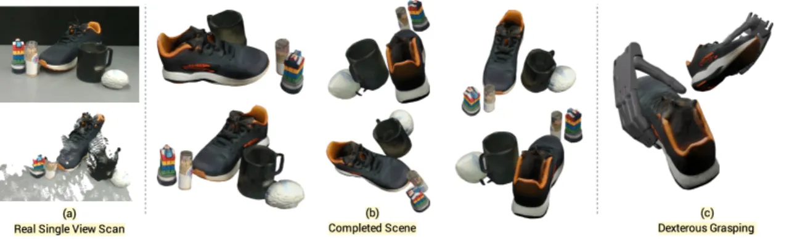
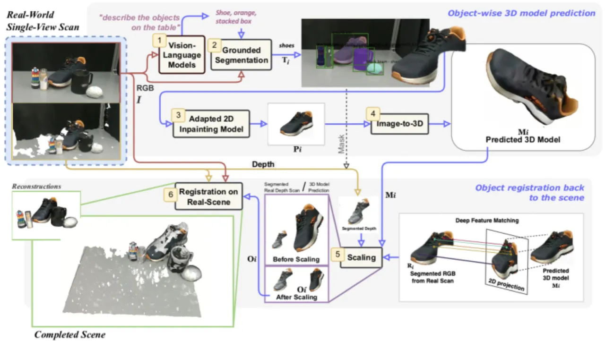
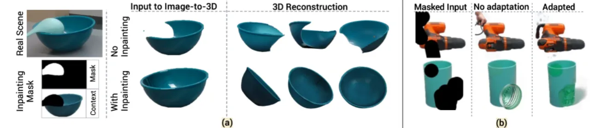
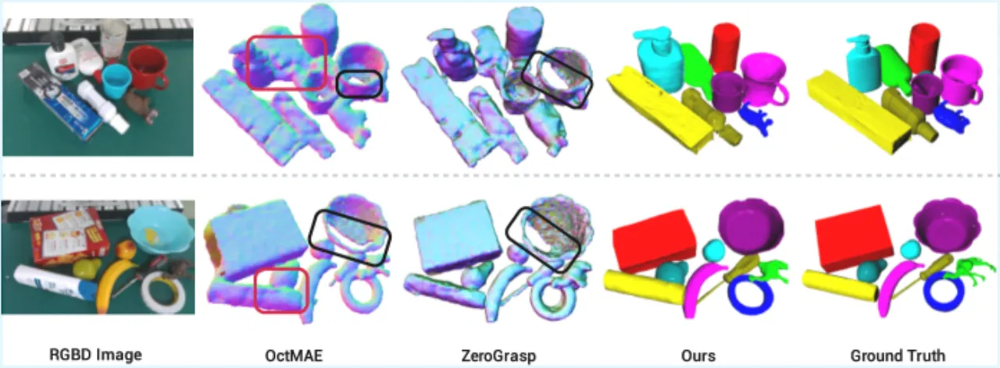
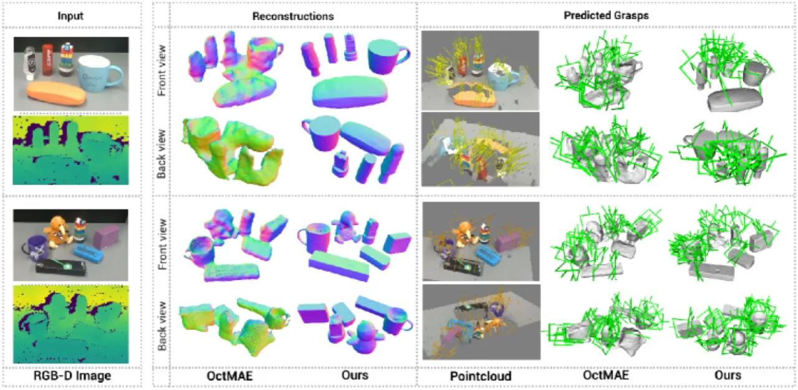
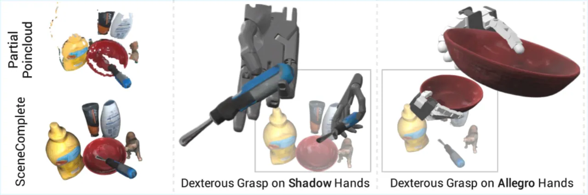

SceneComplete 是一个将多个通用预训练感知模块（VLM、分割、图像修复、Image-to-3D、视觉描述符、位姿估计）串联组合的流水线系统，能够从单张RGB-D图像生成场景中所有可见物体的完整3D网格，包括被大量遮挡的新颖物体，从而为机器人抓取和放置提供精确的三维依据。
机器人在日常杂乱环境中操作，需要对三维场景进行精确理解，才能稳定可靠地抓取和放置物体，并避免碰撞。然而现实中往往只能获得单张RGB-D图像，场景中物体相互遮挡，且多为训练数据之外的新颖物体——这是当前三维场景重建方法面临的核心挑战。
"Careful robot manipulation in every-day cluttered environments requires an accurate understanding of the 3D scene, in order to grasp and place objects stably and reliably and to avoid colliding with other objects. In general, we must construct such a 3D interpretation of a complex scene based on limited input, such as a single RGB-D image."

现有方法（如 PartialDecomp、OctMAE、ZeroGrasp）在开放世界场景下存在明显局限：要么仅能预测场景级占据值而无法给出精确物体网格，要么依赖有限的物体类别，难以泛化到真实杂乱环境中的新颖物体。SceneComplete 的核心思路是组合（composing）已有的大型预训练视觉模型，而非端到端训练一个新模型，从而天然具备开放词汇泛化能力，并能随基础模型的改进而不断提升。
SceneComplete 流水线由六个顺序模块组成，每个模块均调用独立的预训练大型视觉模型。从单张RGB-D输入出发，逐步完成：物体识别 → 分割 → 图像修复 → Image-to-3D → 尺度估计 → 6D位姿配准，最终输出完整场景的物体网格集合。

输入RGB图像送入 ChatGPT-4o，生成场景中物体的文字描述列表；描述和图像再送入 GroundedSAM2 生成每个物体的分割掩码。采用多策略提示（全局描述 + 部分扩展）并通过 IoU 去重，应对 VLM 漏检和过度分割的情况。
对每个分割出的（可能被遮挡的）物体，用 BrushNet（含 LoRA 适配）进行图像修复，将其转化为白色背景上的单个完整可见物体图像。通过边界框扩展保留上下文信息，适配训练使输出符合后续 Image-to-3D 模型的输入要求。
将修复后的2D图像送入 InstantMesh，生成带纹理的3D网格。修复步骤对该模块至关重要：未经修复时，Image-to-3D 模型会生成不完整的网格；修复后则能产生准确的3D重建结果（见图4）。
利用视觉 Transformer 的密集对应匹配，将预测网格与观测点云对齐，估计各向同性尺度因子。最后用 FoundationPose 进行6自由度位姿估计，将每个网格配准到原始扫描的3D坐标系中，完成场景拼装。

在 GraspNet-1B 大型基准数据集上进行定量评估（场景重建质量 + 抓取指标），并在 YCB-V 数据集和真实机器人平台上验证抓取成功率。基线包括 PartialDecomp、OctMAE 和 ZeroGrasp。
| 方法 | MIoU ↑ | CD ↓ | MMD-EMD ↓ | GC ↓ |
|---|---|---|---|---|
| PartialDecomp | 0.166 | 3.16 | 3.32 | 53.5 |
| OctMAE | 0.445 | 1.73 | 3.11 | 20.3 |
| ZeroGrasp | 0.440 | 1.86 | 3.07 | 18.9 |
| SceneComplete（本文） | 0.478 | 1.54 | 3.06 | 16.4 |
MIoU: Mean Intersection over Union；CD: Chamfer Distance；MMD-EMD: Modified Maximum Distance using Earth Mover's Distance；GC: Grasp Collision率。SceneComplete 在所有四项指标上均优于所有基线。
| 方法 | Contact-GraspNet GSR | Antipodal GSR | 总体 GSR ↑ |
|---|---|---|---|
| PartialDecomp | 0.46 ± 0.34 | 0.17 ± 0.13 | 0.32 |
| SceneComplete（本文） | 0.81 ± 0.2 | 0.73 ± 0.18 | 0.77 |
| 方法 | 成功率 ↑ |
|---|---|
| Partial Point Cloud（仅部分点云） | 36.7 ± 9.9% |
| OctMAE | 59.6 ± 15.3% |
| SceneComplete（本文） | 73.3 ± 15.2% |


图4 展示了修复（inpainting）模块的关键作用：去掉修复步骤后，Image-to-3D 模型只能生成残缺网格；未适配的 BrushNet 会引入伪影，而经过 LoRA 适配的版本能正确恢复遮挡区域，生成完整可见物体图像。消融验证了流水线中每个模块（尤其是修复和尺度估计）对最终重建质量的不可替代性。

视觉语言模型（VLM）偶尔会遗漏场景中的物体，尤其是外观不典型或被高度遮挡的物体。论文采用多策略提示（multi-strategy prompting）加以缓解，但无法完全消除。
GroundedSAM 有时会将单个物体的不同部分分开分割。论文通过基于 IoU 的去重（deduplication）部分解决，但仍可能导致下游网格重复或残缺。
当前修复方法会移除物体周围的场景上下文信息。通过边界框扩展和模型适配（LoRA）可部分缓解，但对极端遮挡情况效果有限。
Image-to-3D 模型在处理"highly unusual viewpoints"（极端非常规视角）时会产生失真或不完整的网格，这是当前生成式3D模型的固有局限。
当前方法假设各向同性（isotropic）缩放，对非均匀形状的物体可能不准确。此外，6D位姿配准在"uniformly-textured objects"（纹理均匀的物体）上会失败，因为缺乏可用的区分性特征点。
Image-to-3D 和修复模型的输出对随机种子（seed）敏感，相同输入可能产生质量差异较大的结果，影响系统的可重复性。